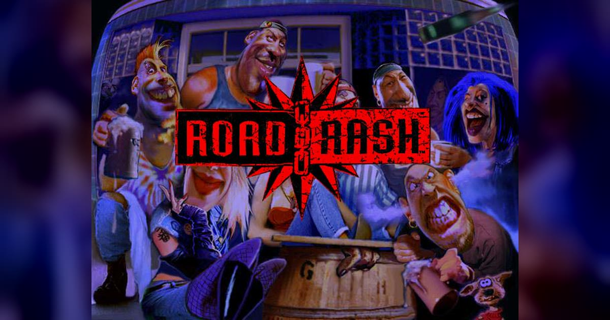

How to Play Road Rash
Road Rash is the classic motorcycle racing and fighting game, and you can play it free in your browser at roadrash.site. Nothing to download and no sign-up: open the page, press Race Now and you are on the starting line. This guide covers the controls, the tracks, the bikes and how to win.
Play Road Rash in your browser
Getting started
The main menu has three ways to ride:
- Race NowA quick race on The City against a full field of rivals. The fastest way to jump in.
- CareerPick a rider, earn prize money, buy faster bikes and work your way up through five levels on all five tracks.
- Play with FriendsCreate a room, share the link, and race your friends in the same race from their own browsers.
Finish in the top places to win money and qualify for the next race. Crash, wreck your bike or get caught by the police and the race ends early, so ride hard but stay on the road.
Road Rash controls (keyboard)
| Accelerate / brake | ↑ / ↓ or W / S |
|---|---|
| Steer | ← / → or A / D |
| Punch | Space, X or Shift |
| Kick | Enter or V |
| Swing the chain | / |
| Backhand chain swing | Z, Q or G |
| Swing the bat | B, once you have grabbed a bat |
| Nitro | N while accelerating, on bikes that have it |
| Change camera | C |
| Mute / unmute | M |
| Fullscreen | F to enter or exit |
| Hide / show hints | H |
| Pause / quit | P or Esc to pause, Esc again to quit |
A standard gamepad also works in races: RT or A accelerates, LT brakes, the left stick steers, X punches, B kicks, Y swings your weapon, LB backhands, RB fires nitro, Back changes camera and Start pauses.
Every attack turns towards the opponent on either side. Hold an attack key to keep swinging. A blow only lands when your fist, foot or weapon actually reaches the other rider, so pull up alongside before you strike.
Playing Road Rash on mobile
Road Rash plays on phones and tablets too. The game always uses a landscape layout: if you hold your phone upright, the game and its controls rotate sideways for you.
- Hold ◀ / ▶ on the left to steer. In the pause menu you can switch to a joystick (drag it to steer, push it up to accelerate) or tilt steering.
- Hold ACCEL on the right to speed up and BRAKE to slow down. AUTO keeps the throttle open for you: it is on from the start of every race and stays on, even after a crash, until you tap it off.
- Tap KICK, PUNCH or SWING to attack the rider next to you.
- Tap the gear at the top of the race screen to drag any button where you like, change its size and see-through level, or pick the Default, Left-handed or Classic layout.
The five tracks
Every track gets longer as you move up through the career levels.
- The CityBusy streets with traffic lights, cross traffic and pedestrians on the crossings.
- Pacific HighwayThe coast road, with oncoming traffic and police patrols.
- Sierra NevadaMountain roads with steep climbs, crests and drops.
- Napa ValleyNarrow roads and switchbacks, with forks where a shorter dirt route meets a longer, faster road.
- The PeninsulaThe fifth course, with the same mix of rivals, traffic and cops.
Bikes: Rat, Sport and Super
The Bike Shop sells fifteen bikes in three classes. Faster bikes cost more, so spend your prize money wisely.
- Rat BikesCheap and tough, like the 125cc Perro Pico and the 500cc Killer Rat. Good for learning.
- Sport BikesFast stock machines such as the 750cc Diablo Vampiro and the 1000cc DMG M10.
- Super BikesThe quickest bikes in the game, several with nitro, like the 1000cc Diablo Vipera N.
Fighting: fists, kicks, clubs and chains
Road Rash is as much a fight as a race. Knock rivals off their bikes with punches, kicks and your chain: you always carry one, and nobody can take it. Every attack turns towards the rider beside you on its own. Punch a rival early in their club swing to grab their bat, then swing it with B.
Watch out for the police. An officer on a motorcycle will chase you down, and if you stop or crash next to one you get busted.
Tips to win
- Stay on the tarmac. Grass and dirt slow you down and make the bike slide.
- Don't hold full steering at high speed for long. Ease off in long bends; small taps keep you in your lane.
- Pick your fights. Attack when a rival is right beside you, then pull away before they hit back.
- Watch the traffic. Cars stop at red lights in The City, and cross traffic pulls out when its light turns green.
- Upgrade early. A faster bike makes the later, longer races much easier.
Frequently asked questions
Can I play Road Rash online for free?
Yes. Road Rash runs free in your web browser at roadrash.site. There is nothing to download or install and no account to create.
Does Road Rash work on phones and tablets?
Yes. On a phone or tablet the game uses a landscape layout with on-screen steering, accelerate, brake and attack buttons, plus optional tilt steering and auto-accelerate.
Can I play Road Rash with friends?
Yes. Choose Play with Friends, create a room and share the room link. Your friends join the same race from their own browsers.
Is my career saved?
Yes. Your career level, money and bike are saved in your browser on that device, so you can come back and continue later.
Is this the official Road Rash from EA?
No. Road Rash is an unofficial, non-commercial fan project by Rustyt Gaming. Road Rash is a trademark of Electronic Arts, which is not affiliated with this site.
Ready to ride?
Play Road Rash online now